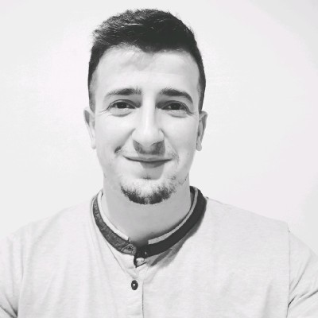

Mario Hoxha

Summary
A hard working individual who consistently puts in a significant amount of effort and dedication into their job responsibilities.
Strong work ethic, commitment, and reliability.
Self-motivated, take initiative, and willing to put in extra hours or effort when necessary to meet deadlines and deliver high-quality results.
Education
University of Tirana, Faculty of Natural Sciences
Bachelor’s Degree
2010 -2013
University of Tirana, Faculty of Natural Sciences
Master's Degree
2013 -2015
Working Experience
Medreseja Vexhi Buharaja · Full-time
Sep. 2015 - Aug 2017
Berat, Albania
- Plan and present suitable learning experiences for all students.
- Monitor students in different school related settings.
- Oversee and analyze student outcomes in physics.
- Develop, select and change instructional materials and plans to attain all students requirements.
- Supervise suitable use and care of materials, equipment and facilities.
- Analyze and grade students’ laboratory work, class work, papers and assignments.
- Develop course materials like homework assignments, syllabi and handouts.
Medreseja e Tiranes · Full-time
Sep 2017 - Aug 2018
Tirana, Albania
- Plan and present suitable learning experiences for all students.
- Monitor students in different school related settings.
- Oversee and analyze student outcomes in physics.
- Develop, select and change instructional materials and plans to attain all students requirements.
- Supervise suitable use and care of materials, equipment and facilities.
- Analyze and grade students’ laboratory work, class work, papers and assignments.
- Develop course materials like homework assignments, syllabi and handouts.
American University of the Middle East (AUM) · Full-time
2018 -
Egaila, Kuwait
- Plan and present suitable learning experiences for all students.
- Monitor students in different school related settings.
- Oversee and analyze student outcomes in physics.
- Develop, select and change instructional materials and plans to attain all students requirements.
- Supervise suitable use and care of materials, equipment and facilities.
- Analyze and grade students’ laboratory work, class work, papers and assignments.
- Develop course materials like homework assignments, syllabi and handouts.
Certifications
Global CPD ,Bess Projects Academy | STEM Education 2
Aug 2016 - Present
- Putting Theory into Practice through Meaningful and Effective Planning.
- Training on integrating STEM content and English.
- Progressing from trainer-led tasks to project-like sessions.
Global CPD ,Bess Projects Academy | CTS Prof. Lang. For Teachers
Feb 2017 - Present
- Giving insights into the many roles of language in the classroom as:
- Working with instructions.
- Using questions.
- Classroom management.
- Routine classroom activities.
Global CPD ,Bess Projects Academy | CTS Pronunciation
Aug 2017 - Present
Skills
- Strong Physics Knowledge
In-depth knowledge of physics concepts, theories, and principles is fundamental.
- Teaching Pedagogy
Understanding various teaching methods, curriculum development, and educational strategies.
- Communication Skills
The ability to convey complex ideas in a clear and understandable manner.
- Classroom Management
Maintaining a well-organized and disciplined classroom environment.
- Technological Proficiency
Using technology and educational tools effectively in teaching (e.g., smartboards, online resources).
- Curriculum Development
Creating lesson plans and course materials aligned with educational standards.
- Passion for Teaching
A genuine enthusiasm for educating and inspiring students in the subject of physics.
- Ethical Conduct
Adhering to ethical and professional standards in the teaching profession.
Other
About Me
My Hobbies